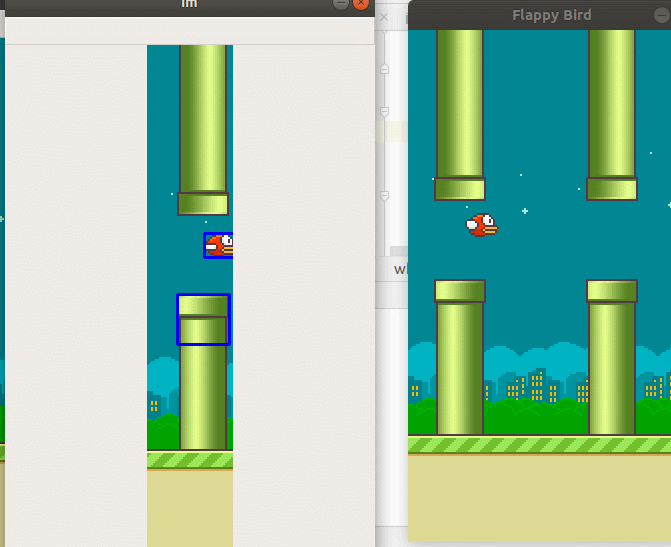

OpenCV玩flappybird¶
《flappy bird》是一款由来自越南的独立游戏开发者Dong Nguyen所开发的作品，游戏于2013年5月24日上线，并在2014年2月突然暴红。这款游戏仅仅是Dong Nguyen利用空闲时间开发出来的,截止当时他已经开发了三十多款游戏.这款游戏突然爆红,仅仅拼接内置的广告就为Dong Nguyen带来了日赚50000美金的收入.
本节我们主要来学习如何利用opencv中的模板匹配技术来玩flappybird这款游戏.当然,如果强迫症的你觉得手工玩比opencv玩的好的话,那不妨来试试吧!
左边图是原理演示图,右边的图像表示的是opencv玩的效果

本项目游戏部分使用的是pygame编写,由于在前面的章节中,我们已经学会了使用pygame编写<坦克大战>的游戏,在本章中我们直接采用pygame写好的flappybird游戏,所以大家需要首先下载该游戏相关的资源包:
1 | |
接下来,我们来看一下这款游戏如何玩
1 2 3 4 5 6 7 8 9 | |
在上面这部分代码中,我们比较关心的其实就是当前帧的图像image,有了它我们就可以使用opencv来玩游戏啦!
这里我们需要用到opencv中的模板匹配技术,那么我们先提供一个模板匹配的方便函数
1 2 3 4 5 6 7 8 9 10 11 12 13 14 15 | |
然后我们实现的大致步骤如下:
- 模板匹配找出小鸟
- 模板匹配找出管道的上部分
- 判断
- 若小鸟的底部 > 管道的上部,则小鸟在管道的下面,需要向上跳
- 若小鸟的底部 < 管道的上部,则小鸟在管道的上方,啥都不做
下面就是我们的完整示例代码
1 2 3 4 5 6 7 8 9 10 11 12 13 14 15 16 17 18 19 20 21 22 23 24 25 26 27 28 29 30 31 32 33 34 35 36 37 38 39 40 41 42 43 44 45 46 47 48 49 50 51 52 53 54 55 56 57 58 59 60 61 62 63 64 65 66 67 68 69 70 71 72 73 74 75 76 77 78 | |